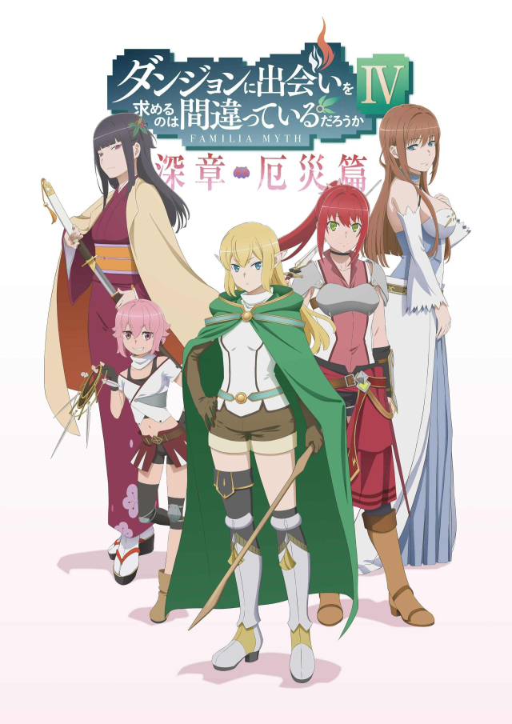

AnimeInterester
在地下城尋求邂逅是否搞錯了什麼 第四季厄災篇

故事簡介
迷宮都市歐拉麗─這是擁有通稱『地下城』的地下壯闊迷宮的巨大都市。在這個城市裡，一名弱小的女神和立志成為冒險者的少年，他們結識了許多伙伴、挑戰地下城，並度過了多次的絕境，貝爾再次獲得了升級。於此同時，赫斯緹雅眷族眷族收到了一封通知。上面所寫的是要求眷族前往地下城未到達樓層的遠征任務。面對未知的冒險，少年和同伴們一同踏出了嶄新的一步。這是少年所經歷，女神將其記載的眷族神話(Familiar Myth)。
製作人員
原作：大森藤ノ
角色原案：ヤスダスズヒト
導演：橘秀樹
劇本統籌：大森藤ノ / 白根秀樹
角色設計：木本茂樹
美術監督：金廷連
色彩設計：安藤智美
攝影監督：福世晋吾
剪輯：坪根健太郎
音響監督：明田川仁
音樂：井内啓二
監製：EGGFIRM/SBクリエイティブ
製作：ダンまち4製作委員会
聲優名單
貝爾‧克朗尼：松岡禎丞
赫斯緹雅：水瀬祈
莉莉露卡·厄德：内田真禮
韋爾夫·克羅佐：細谷佳正
大和·命：赤﨑千夏
三條野·春姬：千菅春香
鹿島·櫻花：興津和幸
常陸·千草：井口裕香
達芙妮·拉洛斯：小若和郁那
卡珊德拉·伊利翁：真野步
阿伊莎·貝勒卡：渡邊明乃
琉·璃昂：早見沙織
阿斯特莉亞：中原麻衣
亞莉榭·羅斐爾：花守由美里
五條野·輝夜：千本木彩花
萊拉：諏訪彩花
各集標題
| 話數 | 標題 |
|---|---|
| 12 | 絕望之詩—安菲斯比納— |
| 13 | 犧牲—殮儀室— |
| 14 | 友人—達芙妮．拉洛斯— |
| 15 | 不冷―Ignis― |
| 16 | 始高—韋爾夫．克羅佐— |
| 17 | 白色迷宮—White Palace— |
| 18 | 迷宮決死行—絕望— |
| 19 | 競技場―Colosseum― |
| 20 | 凋零—阿斯特莉亞眷族— |
| 21 | 溫柔的謊言—白日夢— |
| 22 | 星華―luvia― |